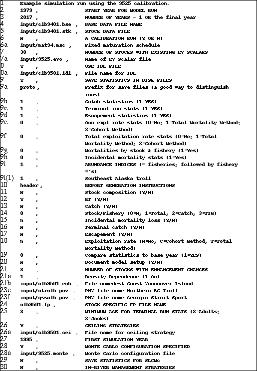
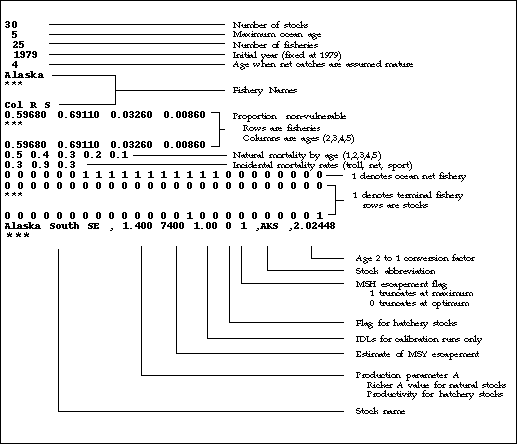
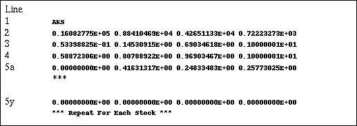

[Chapter Contents]
File Structure Details
Files of type *.opt
The *.opt file contains the instructions for running the PSC Model. The *.opt file specifies the options employed, the input file names (and their paths if necessary), the structure of the Model run, and the output to be produced. Each line of the *.opt file contains an instruction followed by a comma and accompanying text description. Please note that inputs are not case sensitive, e.g., Y and y are considered identical.
Input routines will automatically extract the data appearing before the first comma in each line; therefore, there are no limitations on the types of characters allowed in description fields for each line. For instructions requiring a yes or no answer, the first character of the first word is automatically examined, so you can use a large variety of terms if desired (e.g., n, N, nope, nada, not on your life, etc. are all interpreted as N).
The *.opt file is quite complex but is the backbone of data structure for the model. The actual number of lines may vary from file to file depending on the exact configuration. A line-by-line description of an example file is given in Fig. 2.1. The file is backwards compatible with the PSC Model *.opt file.
Fig. 2.1 Sample *.opt file. The line numbers do NOT appear in the actual file.

The line specifications for the *.opt file are given below. Unless otherwise noted, CRiSP Harvest requires the same formats and supports the same output options as the original PSC Chinook Model on which it is based.
- Line 1: Run Title (required). A run title provides a means to uniquely identify Model runs. The title can be up to 256 characters. There is no limitation on the types of characters that can be used.
- Line 2: Start Year (required). The start year must match the start year used for calibration, usually 1979.
- Line 3: Number of Years for Simulation (required). You can enter either: (a) the number of years (equal to the total number of years minus one since the model considers the first year to be zero; or (b) the last year for the simulation.
- Line 4:
*.bse File Name (required). The *.bse file contains basic information regarding the numbers and names of stocks and fisheries. The same *.bse file is normally used for all simulations once a model is calibrated. You enter only the name of this file. The file is prepared automatically when the model is calibrated and there is no further need to modify it.
- Line 5:
*.stk File Name (required). The *.stk file contains data for individual stocks. The same *.stk files is normally used for all simulations once a model is calibrated. Therefore, you enter only the name of this file. The file is prepared automatically when the model is calibrated and there is no need to modify it.
- Line 6: Calibration Run (required). This line specifies whether or not the instructions are for a calibration run or a simulation run. Most end-user runs are simulation runs not calibration runs. Enter N for simulation runs and include line 6a.
- Line 6a:
*.msc file name. This file must be specified for simulation runs. Results of annual exploitation rate analyses indicate that maturation schedules can vary substantially from year to year. This information can be incorporated into the Model through the use of an *.msc file. The *.msc file identifies stocks with annual estimates of year-specific maturation schedules and provides the name of the file that actually contains the maturation data (*.mat).
The *.mat, *.bse, and *.stk files must correspond to a particular Model calibration; you must insure that the same maturation schedules are used for both calibration and model runs so that results will be compatible. You should enter "NONE" if the model was calibrated with no annual variation in maturation schedules.
- Line 7: Number of Stocks With Existing EV Scalars (required). EV scalars are stock and year-specific survival factors of age 1 fish. For simulation runs, enter the number of stocks. All Model stocks should have EV scalars, so this number should be equal to the total number of Model stocks (currently = 30). If this entry > 0 then include the following line in the
*.opt file.
- Line 7a:
*.evo File Name. This file must be specified if Line 7 > 0. This file is produced during calibration. The *.evo file contains estimates of stock and brood specific productivity scalars up through the last year of available data (in 1995, up through the 1992 brood year), then uses estimates for all subsequent years. You can modify the EV's for years following the last estimated year using procedures described later. It is not necessary for the number of years of productivity scalars to be equal to the number of years of the simulation run as specified in the *.opt file (extra years of data at either end of the years in the simulation will be discarded).
- Line 8: Use
*.idl File (required). Enter Y or N as the model instruction for this line. This line should always read Y if Columbia River stocks are included.
- Line 8a:
*.idl File Name. If Y is entered on Line 8, enter the
*.idl file to use (see section 2.2.7 for format). If it reads N, this line should not be included in the *.opt file.
- Line 9: Save Statistics (required). Enter Y or N as the model instruction for this line to control the generation of statistics in disk files. Disk files are useful for producing graphs or for computing differences in escapement or terminal run between model runs. If Line 9 reads Y, include the following lines in the
*.opt file:
- Line 9a: Prefix. Enter the prefix to be used to identify the disk files to be saved. The PSC Model will utilize up to 5 characters as the file identifier for each type of file specified in lines 9b through 9h. For example, if the prefix RUN92 is specified, then the
*.prn output files will be named RUN92???.prn. (The default prefix is "PROTO")
- Line 9b: Catch Statistics. Enter a 1 to save annual catch statistics for all fisheries on disk in file
prefixcat.prn; enter 0 to skip generation of this disk file.
- Line 9c: True Terminal Run Statistics. Enter a 1 to save true terminal run size annual statistics (i.e., terminal run size minus ocean net catches of age 4 and above) for all stocks on disk in the file
prefixtrm.prn; enter 0 to skip generation of this disk file.
- Line 9d: Escapement Statistics. Enter a 1 to save annual escapement statistics for each stock on disk (saved in file
prefixesc.prn); enter 0 to skip generation of this disk file. Statistics in this file will contain the size of adult escapements. [NOTE: When CRiSP Harvest is run in Monte Carlo mode, the median escapements are printed in this file.]
- Line 9e: Ocean Exploitation Rate Statistics. This variable controls generation of annual adult equivalent exploitation rates by preterminal fisheries. Enter a 1 to save ocean exploitation rate statistics computed as a proportion of catch plus escapement; enter a 2 to save ocean exploitation rates computed as a proportion of the total catch plus escapement plus incidental mortality loss; enter 0 to skip generation of this disk file. Statistics are generated for each stock and simulation year and saved in
prefixohr.prn.
- Line 9f: Total Exploitation Rate Statistics. This variable controls generation of annual adult equivalent exploitation rates by all fisheries. Enter a 1 to save total exploitation rate statistics computed as a proportion of catch plus escapement; enter a 2 to save total exploitation rates computed as a proportion of the total catch plus escapement plus incidental mortality loss; enter 0 to skip generation of this disk file. Statistics are generated for each stock and simulation year and saved in
prefixthr.prn.
- Line 9g: Mortalities By Stock and Fishery. This variable controls generation of annual stock-specific mortalities by fishery. Statistics are generated for each stock and simulation year and saved in a set of files named
prefix???.prn, where ??? represents the stock abbreviation (in capital letters). Permitted values for this variables are:
0 = Do not generate stock/fishery data files
1 = Total mortality
2 = Catch
3 = Incidental mortality
11 = Total mortality in adult equivalents
12 = Catch in adult equivalents
13 = Incidental mortality in adult equivalents
You can generate statistics for a specific list of stocks by listing the desired stock abbreviations after the code using blank spaces as delimiters in the list. For example:
1 STL FRL (...) , (... comments)
For a list of stocks and their abbreviations see "Stock Abbreviations".
- Line 9h: Incidental Mortalities By Fishery. This variable controls generation of annual incidental mortality statistics by fishery. Enter a 1 to save incidental mortality statistics; enter 0 to skip generation of this disk file. Three files are generated containing incidental mortality statistics for each fishery and simulation year: (a)
prefixtim.prn contains total incidental mortality statistics; (b) prefixlim.prn contains incidental mortality statistics for legal-sized fish; and (c) prefixsim.prn contains incidental mortality statistics for sub-legal sized fish.
- Line 9i: Abundance Indices (required). Enter the number of fisheries for which abundance indices are to be generated. The Model will compute an abundance index that represents the expected catch (given size limit regulations, cohort sizes of individual stocks and ages, and 1979-1982 base period average harvest rates). Total abundance indices for each fishery will be contained in disk file
prefixabd.prn. Abundance by stock for each fishery requested will be in the file prefixcoh.prn. [PSC Chinook Model only allowed 6 fisheries maximum per model run]
- If Line 9i > 0: Enter one line for each fishery for which an abundance index is to be computed. Each line consists of a fishery index number, followed by a comma and text description.
- Line 10: Header (required). This line is included in the
*.opt files just to increase readability by indicating the start of instructions for specifying formatted reports. All selected report types are combined into a single formatted report. - Line 11: Stock Composition Report (required). Use "Y" or "N" to instruct the model whether or not to generate stock composition reports. The disk file
prefixPRP.prn will contain the stock composition report. [NOTE: CRiSP Harvest does not support this option. Always enter "N" for CRiSP Harvest runs.]
If Line 11 indicates "Y",
then include the following lines in the
*.opt file.
- Line 11a: Number of fisheries for which stock composition estimates are to be generated (up to a maximum of 6).
- Line 11b: Enter one line for each fishery for which stock composition estimates are to be computed. Each line consists of a fishery index number, followed by a comma and text description.
- Line 12: RT factors (required). Enter "Y" or "N" to instruct the model whether or not to generate RT scalar reports. RT factors are computed for each fishery that is simulated to operate under a catch ceiling. RTs represent scalar values that are applied to base period fishery exploitation and harvest rates to generate catch ceilings (target catches) for all fisheries. The RT is calculated as the ratio (RT is an abbreviation for "ratio") of the catch ceiling to the catch you would obtain given base period harvest rates and specified FP factors (Line 25). If FPs are unchanged, then an RT value greater than 1 indicates a harvest rate that is above based period levels, while an RT value less than 1 indicates a harvest rate that is below base period levels.
- Line 13: Catch (required). Enter "Y" or "N" to instruct the model whether or not to generate reports on annual catches by fishery. [NOTE: CRiSP Harvest does not support this option. Always enter "N" for CRiSP Harvest runs.]
- Line 14: Stock/Fishery Reports (required). This variable controls generation of reports on the distribution of stock-specific mortalities. Permitted values for this variable are:
0 = Do not generate stock/fishery reports
1 = Total mortality
2 = Catch
3 = Incidental mortality
11 = Total mortality in adult equivalents
12 = Catch in adult equivalents
13 = Incidental mortality in adult equivalents
Reminder: If the variable in line 9g is not zero, it will override the value specified in this line to assure consistency in disk file and report data and to conserve memory.
At the end of the simulation run, if you specify an output device for the report, prompts will appear to allow selection of stocks for which these reports are to be generated. If you do not specify an output device (i.e., use the model default), these reports will not be generated. [NOTE: CRiSP Harvest does not support this option. Always enter 0 for CRiSP Harvest runs.]
- Line 15: Incidental Mortality Reports (required). Enter "Y" to instruct the model to generate reports on incidental mortality loss. Reports on total, legal, and sublegal mortalities will be generated if yes is specified. Enter "N" to skip generation of these reports. [NOTE: CRiSP Harvest does not support this option. Always enter "N" for CRiSP Harvest runs.]
- Line 16: Terminal Catch Report (required). Enter "Y" to instruct the model to generate reports on catches by terminal fisheries. Enter "N" to skip generation of this report. [NOTE: CRiSP Harvest does not support this option. Always enter "N" for CRiSP Harvest runs.]
- Line 17: Escapement Report (required). Enter "Y" to instruct the model to generate reports on adult spawning escapements by stock. Enter "N" to skip generation of this report. [NOTE: CRiSP Harvest does not support this option. Always enter "N" for CRiSP Harvest runs.]
- Line 18: Exploitation Rate Reports (required). Enter C(ohort) to select generation of adult equivalent exploitation rate reports based on catch plus escapement; enter T(otal) to select generation of adult equivalent exploitation rate statistics based on catch plus escapement plus incidental mortality; enter "N" to skip generation of these reports. If Cohort or Total is selected, reports on ocean and total exploitation rates will be generated by year and stock. [NOTE: CRiSP Harvest does not support this option. Always enter "N" for CRiSP Harvest runs.]
- Line 19: Compare to Base Year (required). This allows you to compare statistics to a single base year. If the line reads "Y", then a line must be added below to specify which year to use for the comparison. This option is seldom used; generally, you should specify "N". [NOTE: CRiSP Harvest does not support this option. Always enter N for CRiSP Harvest runs.]
- Line 19a: If line 19 indicates "Y", then include the year to use as the base, followed by a comma and a descriptor.
- Line 20: Model Setup (required). This line should always read "Y". This will ensure that the output report includes a section that specifies all of the files and setup parameters for the Model run. [NOTE: CRiSP Harvest does not support this option. Always enter N for CRiSP Harvest runs.]
- Line 21: Number of Enhanced Stocks (required). This line specifies the number of stocks with enhancement. If >0, then include the following lines:
- Line 21a: Density Dependence. Enter 1 to indicate that production is considered to be density dependent for natural stocks that are supplemented by hatchery releases. Under most circumstances, this line will read 1.
- Line 21b: .ENH File Name. Enter the name of the
*.enh file containing specifications for enhancement.
- Line 22: Number of CNR Fisheries (required). Enter the number of fisheries that have chinook non retention (CNR) regulations to be evaluated. If the number of CNR fisheries is > 0, then include the following line in the
*.opt file:
- Line 22a: .CNR File Name. Enter the name of the
*.cnr file containing specifications for CNR fisheries.
- Line 23: Number of Fisheries With Size Limit Changes (required). Enter the number of fisheries that have size limit changes. If this number > 0, then include the following:
- Line 23a: enter one line for each fishery which has size limit changes.
- Line 24: Fishery Policy File Name. Enter the name of the
*.fp (fishery policy) file name containing stock, year, and fishery scalars that are to be applied to base period harvest rates. The *.fp file is a random access file created with the program CREATFP3.BAS. These scalars are used to model harvest rate management strategies and shaping options that disproportionately impact different stocks.
- Line 25: Minimum Age for Terminal Run Stats. This line specifies the minimum ocean age of fish to be included in terminal run statistics. This line usually reads 3 (adults) as opposed to 2 (jacks).
- Line 26: Ceiling Strategies. Enter "Y" or "N" to indicate whether or not catch ceilings are to be evaluated. If "Y", then add the following line to the
*.opt file:
- Line 26a: File Name for Ceiling Strategy. Enter the name of the file that contains the specifications for catch ceilings. Section 2.2.2 describes the format of the
*.cei file.
Note: The following are options for running CRiSP Harvest. The PSC Chinook Model does not support the options described below. Leave the following lines blank when running the PSC Chinook (QuickBasic) model.
- Line 27: First simulation year (FirstSimYr). This year is used to deactivate sliders during the calibration period. EV Scalars are deactivated for 1979 through FirstSimYr -3; harvest rate, PNV, and catch ceiling sliders are deactivated for 1979 through FirstSimYr - 1.
- Line 28: Monte Carlo configuration specifications. Enter "Y" or "N" to indicate whether or not Monte Carlo runs are to be conducted. If "Y", then add the following line to the
*.opt file:
- Line 28a: File Name for the
*.monte file. Enter the name of the file that contains the specifications for the Monte Carlo setup.
- Line 29: SLCMc Statistics. Enter "Y" or "N" to indicate whether or not SLCMc statistics are to be saved. These statistics track catches of individual cohorts for selected stocks to simulate CWT recovery data. These data can then be used to estimate parameters required by the SLCMc model. See Section 2.6 for more details. [NOTE: CRiSP Harvest does not support this option. Always enter N for CRiSP Harvest runs.] If "Y", then add the following line to the
*.opt file:
- Line 29a: File Name for SLCMc statistics. Enter the name of the file that contains the specifications for SLCMc output.
- Line 30: In-River Management. Enter "Y" or "N" to indicate whether or not in-river management strategies are to be included. These strategies include fixed escapement goals using strong, weak, or combined stock management and fixed combined harvest rate goals. If "Y", then add the following line to the
*.opt file:
- Line 30a: File Name for
*.riv file. Enter the name of the file that contains the specifications for in-river management.
[Chapter Contents]
[Chapter Contents]
Files of type *.bse
The *.bse file (Fig. 2.2.) contains basic information regarding the numbers and names of stocks and fisheries and essential parameters from the calibration. The same *.bse file is normally used for all simulations once a model is calibrated. You enter only the name of this file. The file is prepared automatically when the model is calibrated and there should be no further need to modify it.
Fig. 2.2 Sample *.bse file.

[Chapter Contents]
[Chapter Contents]
Files of type *.stk
The *.stk file contains data for individual stocks (Fig. 2.3). This file is generally the same for all simulations after calibration. The elements of the *.stk file are shown in Fig. 2.3. A line-by-line description follows.
Fig. 2.3 Sample *.stk file.

- Line 1: Stock designator.
- Line 2: Initial cohort abundance (age 2, 3, 4, and 5)
- Line 3: Maturation rates (age 2, 3, 4, and 5)
- Line 4: Adult equivalent factors (age 2, 3, 4, and 5)
- Lines 5+: Fishery exploitation rates. Columns are ages (2, 3, 4, and 5) and rows are fisheries. These are the values that are viewed in the Base Period Harvest Rates dialog box.
[Chapter Contents]